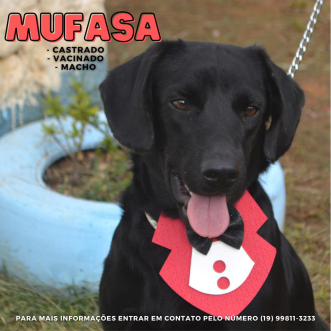
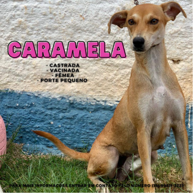
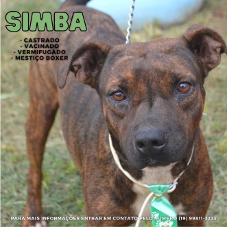
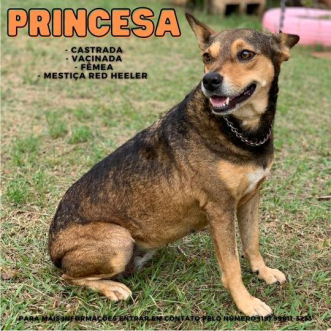
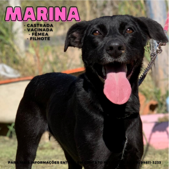

- 
- 
- 
- 
- 

Olá, nós somos do Abrigo Municipal de Pedreira/SP. Este site foi criado com o intuito de mostrar nossos serviços em prol aos animais, levando informação aos moradores da cidade e em busca de novos lares para nossos Aumigos.
O Abrigo de Animais de Pedreira, que é mantido pela administração municipal, está localizado na Estrada Hamilton Bernardes, próximo ao Conjunto Habitacional Vida Nova, e é aberto à visitação de segunda a sexta-feira, das 7h às 16h e aos sábados e domingos das 7h às 11h.
Atualmente, os animais abrigados no local foram encontrados em risco, doentes ou sofreram maus tratos, e recebem atendimento veterinário, tratamento, castração e alimentação.
A equipe é formada por um médico veterinário, um estagiário em veterinária e outros quatro funcionários, que trabalham para manter o abrigo sempre limpo e organizado.
Caso queira colaborar com o abrigo com rações, medicamentos, roupinhas ou outros itens, essas doações podem ser entregues no endereço do abrigo.
Para doações de outros tipos, como doações financeiras, entre em contato pelo número (19) 99811-3233.